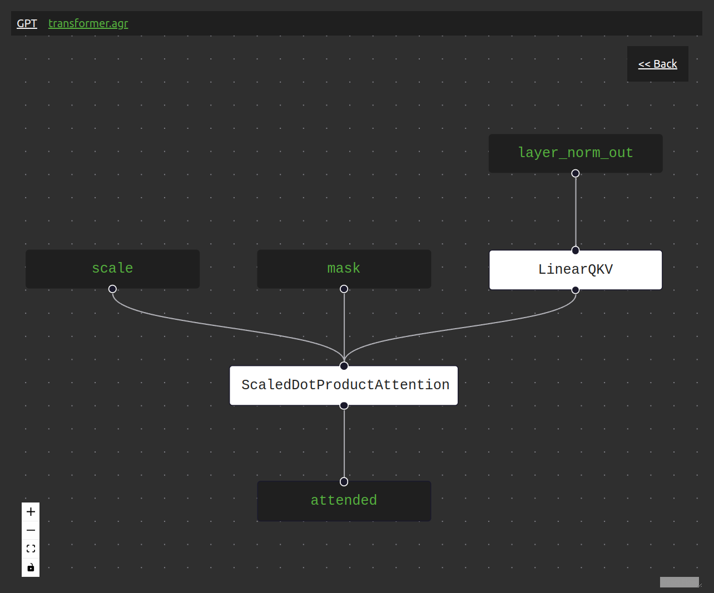

U.S. Artificial Intelligence Inc.
About
U.S. Artificial Intelligence Inc. is an American technology company bringing cutting-edge AI to the next million businesses and institutions.
Some form of AI will ultimately touch just about every piece of software you interact with.
U.S. Artificial Intelligence can produce a tailored AI solution to enhance your business's productivity.
In addition to our work with clients, we have built a variety of AI software products targeting users all the way from the ML research community to ordinary small businesses.
See below for more information on our software offerings and contact information.
1
Products
U.S. Artificial Intelligence offers three products off-the-shelf. First, our AI-powered RFP Responder can use your company's previous bid responses to automatically answer questions on new bids, helping you save time during the bidding process. The other two, Agrippa and Praetor, are designed for the AI research community.
1.1
RFP Responder
Using an underlying AI model similar to ChatGPT, our AI-powered RFP Responder can automatically retrieve relevant information from your company documents and use that information to generate answers to questions on new RFPs. While the new question might be unanswered in the previous docs, the model can pull together different resources and usually give a reasonable response. You can work with the AI side-by-side, providing it additional information or steering its responses as you go. To try a demo, please email us at team@agrippa.build.
1.2
Agrippa

Figure 1: The Agrippa model architecture visualizer showing the attention mechanism inside a Transformer.
We are the creators of Agrippa, a platform for building, visualizing, and sharing AI models.
Agrippa gives researchers the ability to specify new architectures using a markup language that mirrors how most people think about models.
Different component "blocks" are strung together in an intuitive way.
Parameters are explicit and named.
Shared parameters, parameter initialization schemes, and other tricks are similarly easy to implement.
1.3
Praetor
See also Praetor, a fine-tuning data and prompt management tool. Praetor is extrememly simple and lightweight, so it can be a drop-in replacement to hacky scripts that you might be using currently to manage your LLM training data.
2
Client Work
Artificial Intelligence presents an incredible opportunity for businesses to outpace competitors. It can let one person do the work of ten or more. However, most companies have a hard time discerning the cases when AI is transformative from the cases when AI is overhyped.
We can help your instutition identify areas where AI will give you an edge in addition to the areas where it won't. Once we've idenitifed areas where an AI-powered solution might make sense, we will build out a tool made specifically for your company.
2.1
Contact
Please email team@agrippa.build for information about partnerships, careers, or any other inquiries.
3
Team
U.S. Artificial Intelligence was founded by Gordon Kamer in 2023. Before founding the company, Gordon graduated Harvard College with a degree in Computer Science with honors. He worked for the Washington-based consultancy Long-Term Strategy Group as a researcher, primarily advising the Department of Defense on how AI may impact national security. Following his time at LTSG, Gordon worked independently for the DoD on similar issues.
4
Some Math
If AI is going to be very important in our world, it should make sense for everyone to try, as best they can, to understand a little bit of linear algebra. Linear algebra, after all, is that branch of mathematics that has given us the miracles of modern machine learning. The following proof of the "Fundamental Theorem of Linear Maps" (also known as the "Fundamental Theorem of Linear Algebra") appears in Sheldon Axler's textbook Linear Algebra Done Right. It is effectively made up of two separate theorems, the second of which you may recognize as the Rank-Nullity Theorem.
4.1
Fundamental Theorem of Linear Maps
Suppose V is finite-dimensional and T \in \mathcal{L}(V,W).
Then \textrm{range}\;T is finite-dimensional and
\textrm{dim}\;V = \textrm{dim null}\;T + \textrm{dim range}\;T
First, understand that T is simply a matrix (linear mapping) with \textrm{dim}\;V columns and \textrm{dim}\;W rows. The final equation states that the the number of columns in the matrix is equal to the dimension of the nullspace of the matrix (its kernel) plus the dimension of its range (image).
Proof
Let u_1,\dots,u_m be a basis of \textrm{null}\;T; thus \textrm{dim null}\;T = m. The linearly independent list u_1,\dots,u_m can be extended to a basis
u_1,\dots,u_m,v_1,\dots,v_n
of V (left as an exercse to the reader). Thus \textrm{dim}\;V = m+n. To complete the proof, we need only show that \textrm{range}\;T is finite-dimensional and \textrm{dim range}\;T = n. We will do this by proving that Tv_1,\dots,Tv_n is a basis of range T.
Let v \in V. Because u_1,\dots,u_m,v_1,\dots,v_n spans V, we can write
v = a_1u_1+\cdots+a_mu_m+b_1v_1+\cdots+b_nv_n,
where the a's and b's are in \textbf{F}. Applying T to both sides of this equation, we get
Tv=b_1Tv_1+\cdots+b_nTv_n,
where the terms of the form Tu_j disappeared because each u_j is in \textrm{null}\;T. The last equation implies that Tv_1,\dots,Tv_n spans \textrm{range}\;T. In particular, \textrm{range}\;T is finite-dimensional.
To show Tv_1,\dots,Tv_n is linearly independent, suppose c_1,\dots,c_n\in\textbf{F} and
c_1Tv_1+\cdots+c_nTv_n=0.
Then
T(c_1v_1+\cdots+c_nv_n)=0.
Hence
c_1v_1+\cdots+c_nv_n\in\textrm{null}\;T.
Because u_1,\dots,u_m spans \textrm{null}\;T, we can write
c_1v_1+\cdots+c_nv_n=d_1u_1+\cdots+d_mu_m.
where the d's are in \textbf{F}. This equation implies that all the c's (and d's) are 0 (because u_1,\dots,u_m,v_1,\dots,v_n is linearly independent). Thus Tv_1,\dots,Tv_n is linearly independent and hence is a basis of \textrm{range}\;T, as desired. \blacksquare